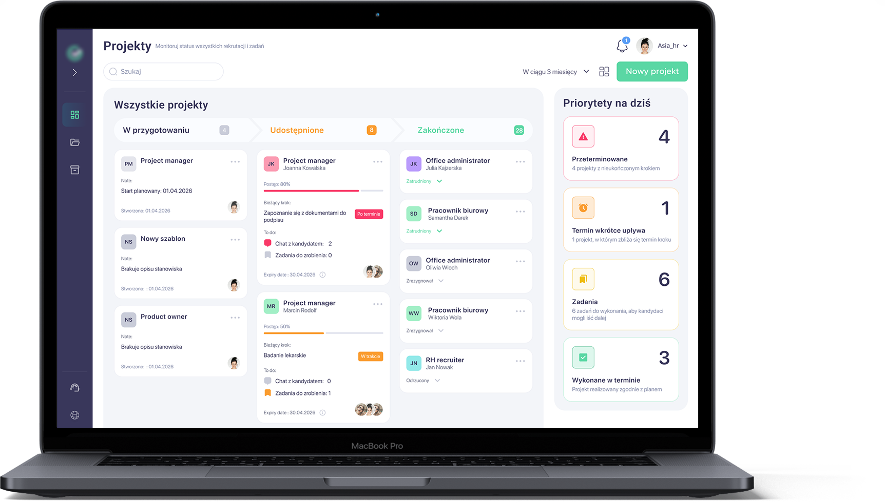
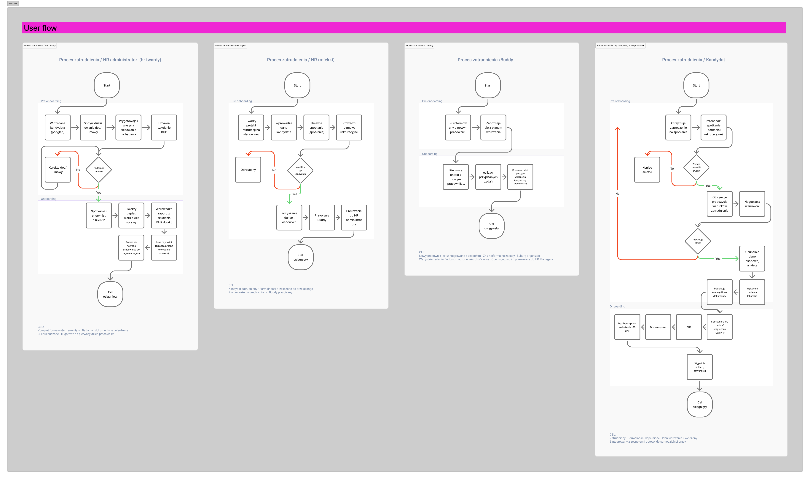
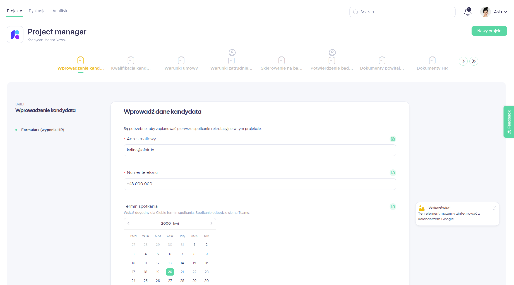
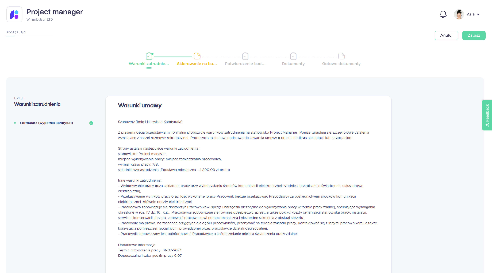
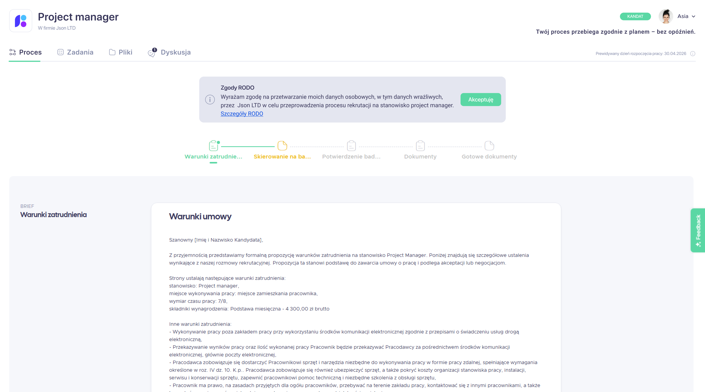
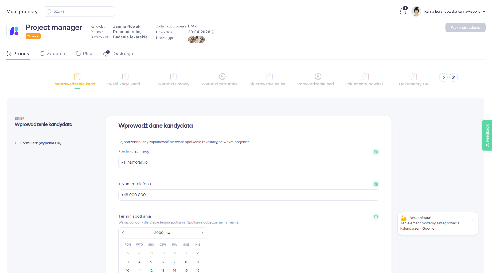
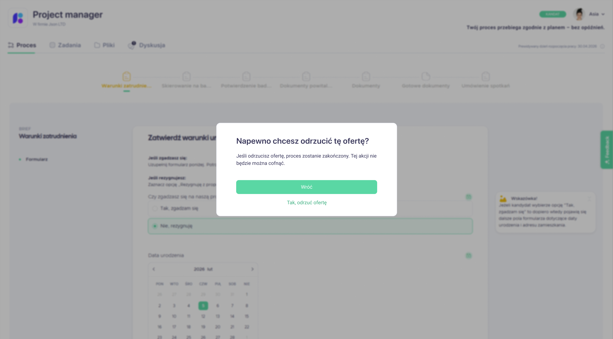
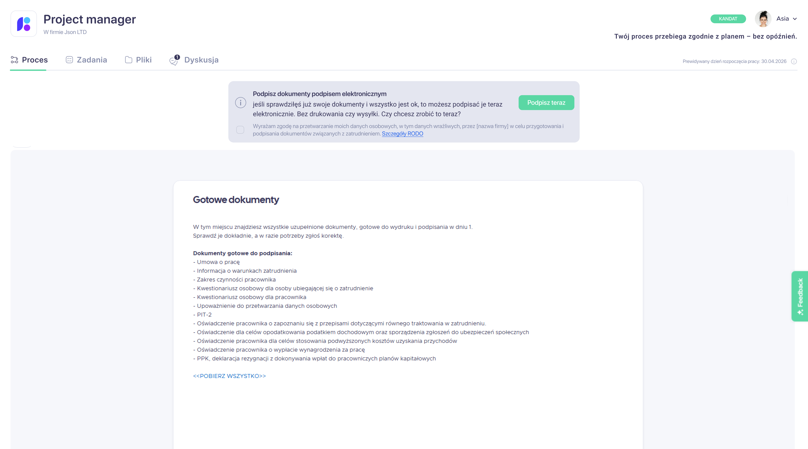

Anastasiia Medvid
UX/UI designer
Resume

In 1 month of redesign, I reduced the time to complete the key workflow from X to Y minutes, based on research into users' real needs and behaviors.
Project
B2B web SaaS system for HR
Tools
Figma, Claude, Google workspace
Contribution
Research, Ideation, User flows, Prototyping, User tests, Design system

I designed a B2B web SaaS system for HR and operations managers that brings candidate search and employment management into one place. It helps teams monitor ongoing work, coordinate tasks, and make informed decisions without jumping between multiple tools, while providing a clear, consistent UX/UI tailored to their daily workflows.
Right now recruiters do not have a single tool to run their work, so they juggle several systems and spreadsheets to drive the hiring process. They lack visibility into what is happening at each stage, how long it will take, and who should react when something goes wrong, so recruitment effectively depends on a few "key people". As a result, the same process can take anywhere from 1 to 3 months.
I followed a systematic design process through all project to ensure user-centered and functional outcomes.
This process includes:
Understanding user needs through research.
Clarifying the core problem.
Brainstorming creative solutions.
Creating wireframes and interactive prototypes.
Iterating based on usability testing and feedback.
During my research and exploration, I defined a user group and conducted extensive research, including interviews with potential users (employers and HR managers). As a result, I created a few key user personas to guide the design.
Employers / HR managers
Primary users running the process and owning cost and delivery.
Candidates
Recipients of the process; their needs influence what Group 1 must deliver.
Fragmented visibility of onboarding progress. Stakeholders lack a single, consolidated view of where a new hire is in the process, forcing HR to manually gather status updates across tools and teams.
Unstructured, time-based onboarding journey. There is no clear 1/3/6-month roadmap for new hires, and managers seldom translate expectations into a concrete onboarding plan.
Diffuse ownership of onboarding responsibilities. Boundaries between HR, managers, and the team are blurred, with no formal buddy role; as a result, new hires often self-coordinate key onboarding interactions.
High manual load in administrative workflows. Core HR admin involves repeated data entry and paper handling across systems, leading to avoidable effort, latency, and risk of inconsistencies.


Role: Recruiter / recruitment consultant.
As a professional, people-oriented recruiter, Marta focuses on delivering high-quality hires so she is perceived as a "talent magnet" and a reliable partner. She likes to feel needed, but time pressure and process chaos drain her energy, and configuring new tools feels like yet another task on her plate. That's why she needs a solution that saves time and brings structure to recruitment with minimal setup effort.
Role: HR Generalist / HR Operations.
As a structured, detail-oriented HR generalist, Ania is responsible for making sure office employees are formally hired and smoothly onboarded, without gaps between HR, IT, and managers. She dislikes situations where "it's nobody's area" and where new hires experience a chaotic first day with missing access, equipment, or meetings. At the same time, constant manual reminding, chasing dependencies, and closing tasks via email and Teams is exhausting for her. She therefore needs a simple, transparent tool that shows the overall onboarding status in one place, organizes checklists for different stakeholders, and lets her be confident that "everything is ready" before a new hire actually starts.
When a client opens a new recruitment and I have to react "right now", I want to assemble a coherent starter package (job ad, initial message, basic process steps) in 10–15 minutes, so I can launch without writing everything from scratch or creating inconsistent information.
When several candidates are in the "pre-signature" stage at the same time, I want to see the status of all formalities and blockers in one place, so I can prioritise actions and avoid losing start dates due to missing documents or overlooked steps.
When a hiring manager/client delays a decision or changes requirements, I want to quickly capture the final decision in a simple format and update all candidate communications, so the process doesn't stall or trigger unnecessary candidate drop-outs.
When a client asks for "people ASAP", I want to clearly communicate hard requirements (e.g. physical demands, medical/psychological tests) in the job ad and first contact, so I filter out mis-fit candidates early and do not waste time on late-stage resignations.
In this stage, I mapped the key user journeys and used them as a foundation to design two user flows that test the main path of the solution with users: the pre-onboarding flow.
I designed two main user flows: pre-onboarding . I focused on the recruitment project setup and its individual steps, so the process of searching for and hiring a candidate became a single, coherent flow. The user flows account for timely involvement of all key and secondary participants (Buddy, future manager, health and safety specialist, etc.), making responsibilities and handoffs explicit.

At this stage, I created mid-fidelity layouts that defined the structure, hierarchy, and key states of each screen, making responsibilities and next steps clear at a glance.
I then designed two main flows based on these layouts:
HR flow: overseeing pre-onboarding from offer to candidate decision and managing documents, referrals, and communication before day one.
Candidate flow: accepting or negotiating the offer in the app and preparing for day one by completing medical checks, forms, and questionnaires.
Together, these flows ensure both sides are ready for the first day with maximum automation and minimal manual steps.
The study aimed to explore how users perceive the logic and completeness of the pre-onboarding flows and to estimate how error-proof these paths are from their perspective.


This user test evaluated the mid-fidelity flows I designed for the pre-onboarding process.
The study was conducted on a desktop demo prototype of the interface. Video sessions with participants were recorded via Google Meet and transcribed using Firefly. Participants observed a walkthrough of the user journey for a selected role, and each group was shown a dedicated flow. During the session, they were encouraged to ask questions and share comments, and at the end the moderator asked a few follow-up questions.
The key user problems and needs cluster around five main areas:
These elements have the strongest impact on trust in the system, the sense of control, and decisions about implementing the tool in organisations.
Further issues of major and minor importance include:
These problems do not block the main path but they affect work comfort and increase users' cognitive load.

Based on the identified issues, I make changes in design that introduces several structural changes.

Two role-handling options were explored and the final flow now shows candidate steps to HR while visually distinguishing them with colours and icons.
Project templates were made more flexible, and this flexibility is clearly communicated.

A "Send for electronic signature" action was added next to ready documents, and the flow was integrated with an e-signature provider.

The contract approval screens was extended with a prominent CTA and a confirmation modal when action cannot be undone.

Prompt workspace for creating, organizing, and reusing personal and public prompts within an AI prompt productivity platform.

Designing a modular, multi-agent AI scheduling system that coordinates hotel operations and learns from historical patterns.

Your best choice designer.
I'll help you to make a choice and ready to ansfer for any questions.